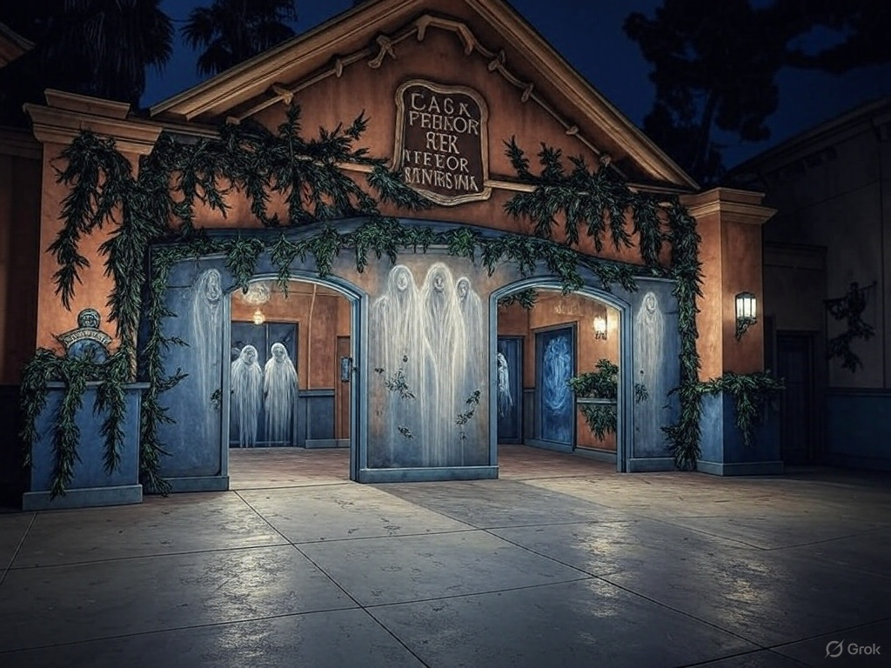
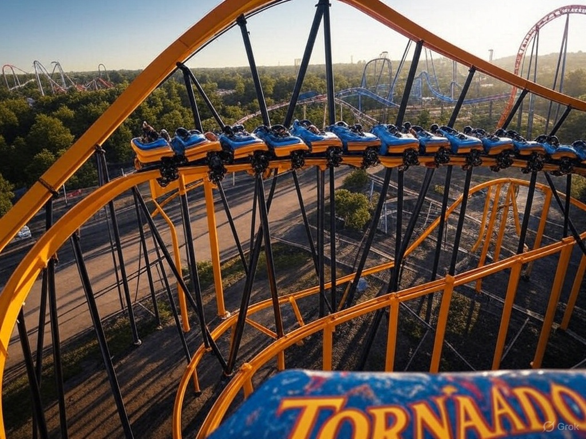
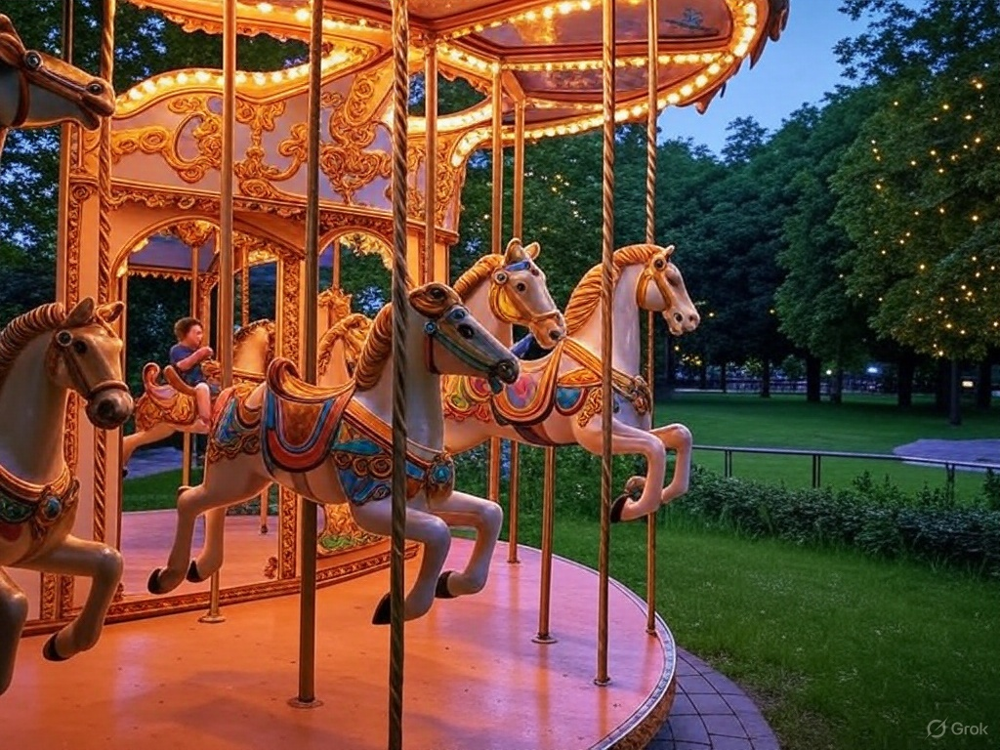

Carrusel
Una vuelta clásica llena de música y color para todas las edades.
Detalles

Casa del Terror
¿Te atreves a entrar? Suspenso y emoción garantizada.
Detalles

Trencito Mágico
Ideal para los más pequeños, un viaje encantado por el parque.
Detalles

Sillas Voladoras
Gira por los aires mientras disfrutas la vista.
Detalles

Rueda de Chicago
Una vista panorámica para disfrutar el parque desde las alturas.
Detalles

Montaña Rusa
Adrenalina pura para los más valientes.
Detalles

Juegos Infantiles
Zona segura y divertida para los niños más pequeños.
Detalles